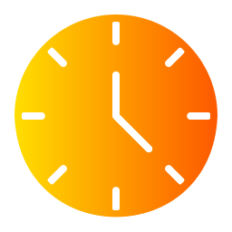

Time Tracker
🇵🇰
Karachi, Pakistan
--:--:--
Loading...
Good day!
Determining your timezone...
The time above is the current time in Karachi, Pakistan (UTC+5), where I live and work. This page updates every second to show you the exact time in my timezone.
Your Local Time:
--:--:--